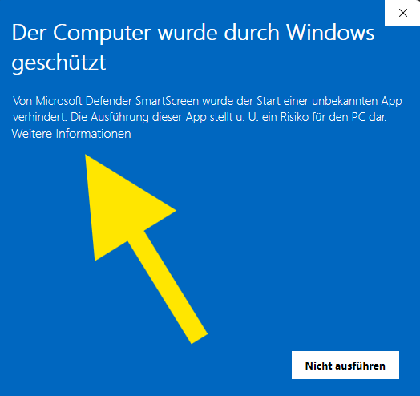

Räumt FiveM auf, stellt GTA richtig ein und installiert TeamSpeak mit SaltyChat.
ZIP HERUNTERLADENSo startest du es
- 1RetroRoleplayTool.exe aus der ZIP herausziehen
- 2Doppelklick auf die Datei
Windows warnt beim ersten Start, weil das Programm nicht signiert ist:
3„Weitere Informationen“
4„Trotzdem ausführen“


-
CACHE CLEANER
FiveM-Cache, %TEMP% und Shader-Cache leeren, Stable-Kanal setzen
-
GTA-EINSTELLUNGEN
Texture Budget, FXAA, MSAA, VSync, Dichte, Distanz, mit Zurück-Funktion
-
SONDERFUNKTIONEN
TeamSpeak 3, SaltyChat, TS-Sounds, TS-Moved-Fix, Grafik-Mods, FiveM in Steam (ungetestet)
-
DISCORD BOTS
Retro RP für Familien-Discords und Retro Business
-
LINKS ZU RETRO
UCP, Regelwerk, Discord und Entbannungsdiscord